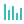

Posicionamiento estatal
- Población —
- Densidad —
—


—
c100)
Guerrero es un estado del sur de México con costas en el Océano Pacífico y una geografía diversa que incluye la Sierra Madre del Sur y valles interiores. Su territorio combina zonas urbanas y rurales con alta riqueza cultural y ambiental.

?v=...), consulta datos (JSON local), y actualiza tabla y gráfica.fetch en file://, ejecútalo con un servidor local.